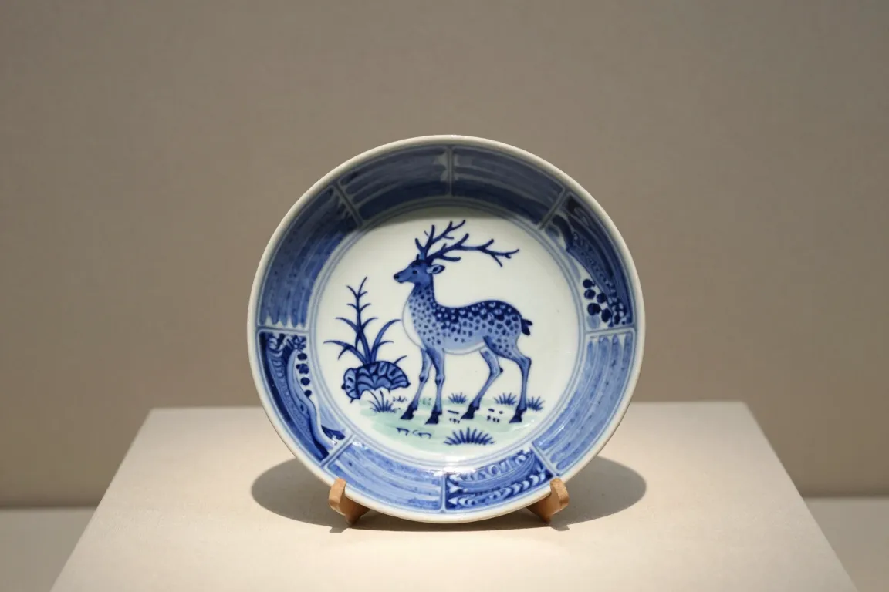

Тонкий сине-белый экспортный фарфор из Цзиндэчжэня. У тарелок и чаш борт разбит на 8 полей, обрамляющих растения и священные предметы, и центральная сцена. Португальские и голландские купцы продавали его по всей Европе.

Главная идея
Один кобальтовый синий на белом фарфоровом черепке, упорядоченный полями, которые быстрый живописец может повторять, даёт узор, который хочет купить целый континент.
Принципы дизайна
Делите борт на 8 полей, чередуя широкие и узкие, и заполняйте каждое растением, жемчужиной или драгоценным предметом.
Пишите в углублении одну сцену: птицу на скале, оленя или вазу с цветами.
Пишите кобальт под глазурью нагруженной кистью и смягчайте синий бледной заливкой.
Вытачивайте фарфор очень тонко, со стенкой 2–3 мм, чтобы он был лёгким и просвечивал.
Берите прозрачную глазурь с лёгким сине-серым тоном и обжигайте блюдо в печи на дровах.
Оставляйте на краю венчика тонкую коричневую железную линию там, где глазурь тонко стекает.
Упаковывайте тарелки для корабля стопками по 20 и более; набор одного размера и одного узора.
Антипаттерны
Толстая непрозрачная белая оловянная глазурь на гончарном черепке
Печатный узор с ровными жёсткими линиями
Красная, зелёная или золотая эмаль поверх глазури
Глубокий насыщенный синий, как в посуде XVIII века